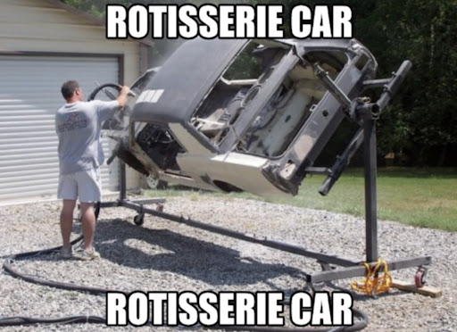

So this video is a reference to the inside of my head. The cinder block represents my brain.
This image is called the Rotisserie Car and it's basically considered a religious symbol.
(If the drop down menu doesn't work, use the hyperlinks below).
Back To Home